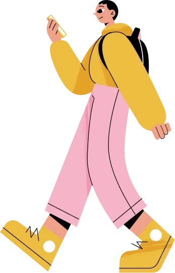
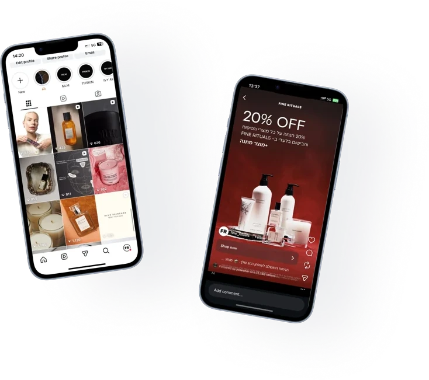
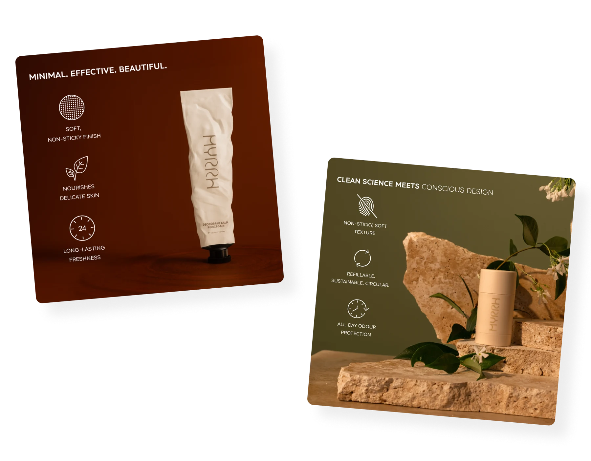
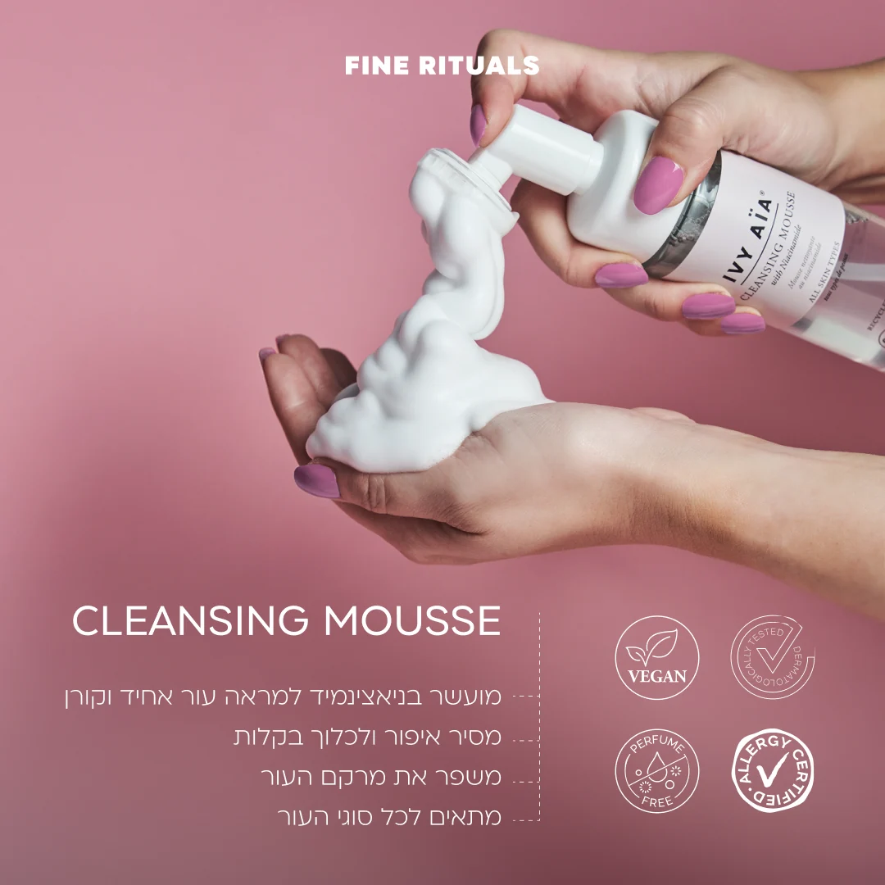
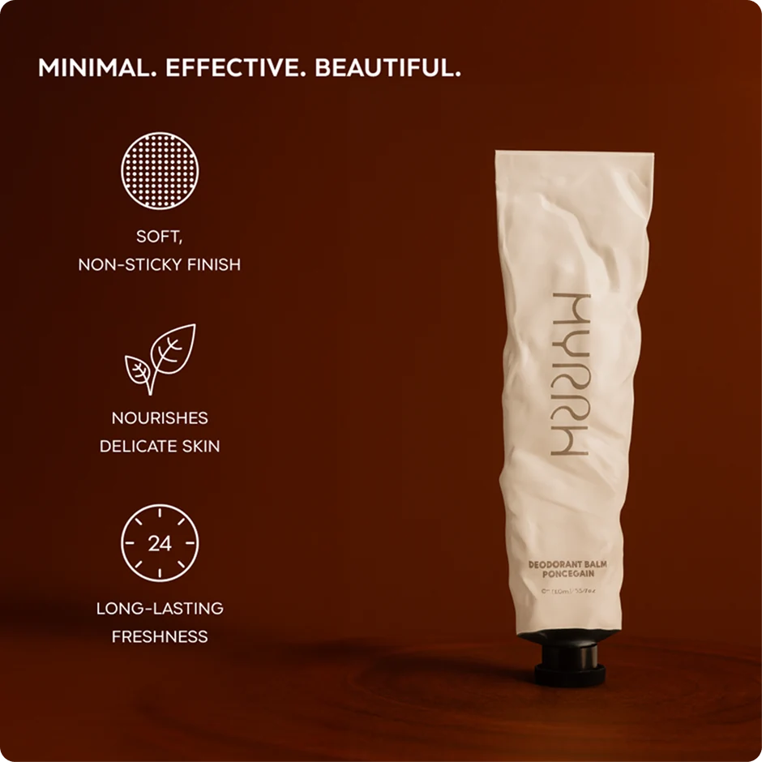

Tzadik Azaria — Visual & Creative Designer
Design with clarity.And a point of view.W 0 × H 0
Brand identities, digital campaigns and visual experiences. Thoughtfully made to connect across every touchpoint.





Selected Projects
Brand, campaigns and digital design — led by clarity, craft and a point of view.
Commercial workAcademic concept


 01
01Campaign & Digital Design
Connected campaign creative for beauty and lifestyle brands — one visual direction carried across social, web, email and paid media.
Commercial workView case study →
 02
02Marketplace Product Visuals
Scalable listing systems that make product benefits clear at a glance.
Commercial workView case study → 03
03Hatachana
Identity, illustration and a mobile tour experience for a complex urban landmark.
Academic conceptView case study → 04
04Give Me Sambusak
A loud, friendly street-food identity — from packaging to a stand you can step into, and a self-ordering screen.
Academic conceptView case study →A thoughtful approach.
A versatile perspective.
I’m a designer working across brands, campaigns and digital experiences. I combine a strong eye for typography and composition with the practical care it takes to bring an idea into the world.
More about me